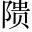

凡大人之道有三：一曰正蒙難去聲。，二曰法授聖，三曰化及民蒙，犯也。正蒙難者，以正犯難也。○總提三柱立論。。殷有仁人曰箕子，實具茲道，以立於世。故孔子述六經之旨，尤殷勤焉謂下《易》、《書》、《詩》所載是也。○出箕子。。
當紂之時，大道悖亂，天威之動不能戒，聖人之言無所用《書》:「今天動威。」○總起。。進死以並命，誠仁矣，無益吾祀，故不為閣過比干。；委身以存祀，誠仁矣，與預。亡吾國，故不忍閣過微子。。具是二道，有行之者矣將正寫箕子，先入此段，斡旋多少。。是用保其明哲，與之俯仰，晦是謨範，辱於囚奴，昏而無邪，頹。而不息。故在《易》曰：「箕子之明夷。」正蒙難也《詩》:「既明且哲，以保其身。」《書》:「囚奴正士。」正士，謂箕子也。《易·明夷卦》六五：「箕子之明夷。」夷，傷也。言六五以宗臣居暗地，近暗君，而能正其志，箕子之《象》也。○應前「一曰」。。及天命既改，生人以正，乃出大法，用為聖師，周人得以序彝倫而立大典。故在《書》曰：「以箕子歸，作《洪範》。」法授聖也大法，謂《洪範》。洪，大也。範，法也。《書》:「天乃錫禹《洪範》九疇，彝倫攸敘。」《漢·志》曰：「禹治洪水，錫《洛書》，法而陳之，《洪範》是也。」《史記》：武王克殷，訪問箕子以天道，箕子以《洪範》陳之。蓋《洪範》發之於禹，箕子推衍增益，以成篇歟。○應前「二曰」。。及封朝鮮，推道訓俗，惟德無陋，惟人無遠，用廣殷祀，俾夷為華，化及民也朝鮮，東夷地。《漢書·地理志》：箕子去之朝鮮，教其民以禮義、田蠶，民犯禁八條，其民終不相盜，無門戶之閉，婦人貞信不淫僻，其教民飲食以籩豆為可貴。此仁賢之化也。○應前「三曰」。。率是大道，藂同「叢」。於厥躬，天地變化，我得其正，其大人歟應前「大人」第一句。○首提作柱，以次分應，似正意，卻是客也。下一段寫出箕子意中事，是作者大旨。？
於虖同「嗚呼」。！當其周時未至，殷祀未殄，比干已死，微子已去，向使紂惡未稔飪。而自斃，武庚念亂以圖存，國無其人，誰與興理？是固人事之或然者也。然則先生隱忍而為此，其有志於斯乎忽然別起波浪，語極淋漓感慨，使人失聲長慟。？
唐某年，作廟汲郡，歲時致祀汲郡，紂故都，今為河南衛輝府。。嘉先生獨列於《易·象》，作是頌雲頌不載。。
前立三柱，真如天外三峰，卓然峭峙。「於虖」以下，忽然換筆，一往更有深情。